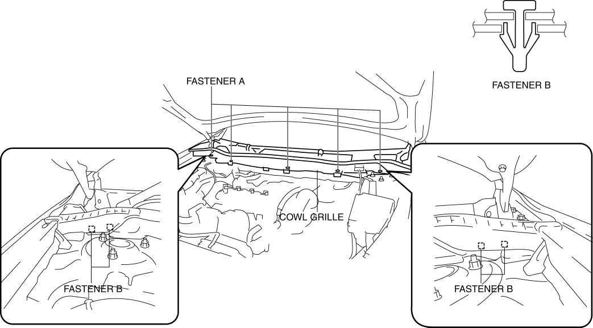
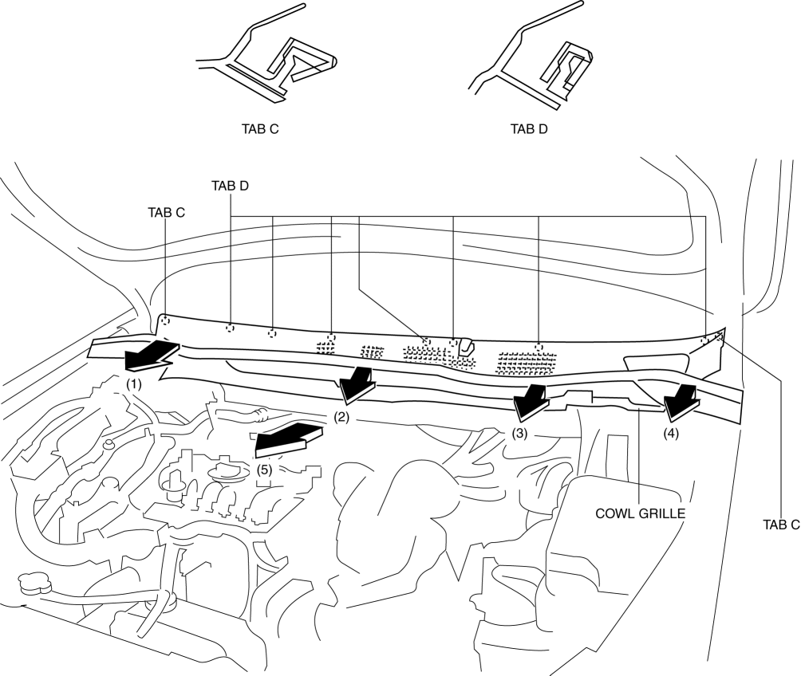

< Previous
Next >
2014 -
Mazda6 -
Body and Accessories
COWL GRILLE REMOVAL/INSTALLATION
1. Remove the windshield wiper arm and blade. (See WINDSHIELD WIPER ARM AND BLADE REMOVAL/INSTALLATION.)
2. Remove fasteners A shown in the figure.

3. Remove fasteners B shown in the figure.
4. Disconnect the joint pipe A of the windshield washer hose. (See WINDSHIELD WASHER HOSE REMOVAL/INSTALLATION.)
5. Pull the cowl grille in the direction of the arrow in the order of (1), (2), (3), (4), (5) and remove it while detaching tabs C, tabs D.

6. Install in the reverse order of removal.
< Previous
Next >
© 2012 Mazda North American Operations, U.S.A.